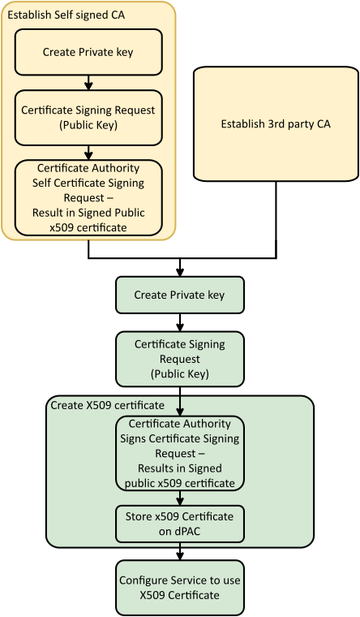

To sign X509 certificates a root of trust must be established:

For any CA, the secret keys must be handled carefully to prevent the data falling into the hands of an attacker. Anyone with access to the key data or even just part of the key should be able to sign their own certificates and impersonate the devices in EcoStruxure Automation Expert.
The procedure uses:
One configuration file per CA.
One configuration file per CSR type.
Establish a Self signed CA:
Establish a secure store for the private key
Create the CA private Key.
Create the CA public key and CSR
Sign the CA with its own CA private Key
Create device certificate:
Establish a secure store for the device private key
Create the device private key
Create the device public key and CSR
Sign the device public key with the CA private key
The EcoStruxure Automation Expert - Buildtime v25.0 is not capable importing certificates into the solution and including them in the security configuration that is transferred to the device when Configure Security command used for securing a device, as described in the Secure the Devices topic from the EcoStruxure Automation Expert - User Manual. Certificates must be copied into the device using the "docker cp" command.
This use case is limited to the Soft dPAC as it is unsupported on M580d, M262d and ATVd devices.
Alternatively the self signed certificate can be used by the external service to authenticate the dPAC.